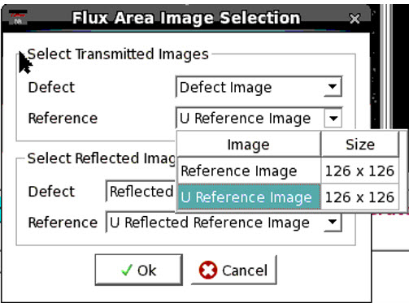

You can select images for flux area ratio
calculation by using the Select Images for Flux Area button
in the Image Measurement window.
Procedure
- Click
the Select Images for Flux Area icon in the
IMU toolbar .
The Flux Area Image Selection dialog box is displayed.
Figure 1. Flux Area Image Selection Dialog Box
- Select Defect, Reference, Reflected Defect,
and Reflected Reference images using the corresponding combo boxes.
Make sure you select Defect, Reference, Reflected Defect, and Reflected
Reference images of the same size.
Figure 2. Defect and Reference Image Selection
- Click Ok. The image
selection is also preserved across Calibre DefectReview sessions.